Fichas de Ciencias y salud – 9.º grado (3.º de ESO)
173 recursos de Ciencias y salud para 9.º grado (3.º de ESO), listos para imprimir: Elemento, Zinc, Wolframio, Titán y más. Cada ficha muestra el nivel, el número de páginas y una vista previa, y enlaza directamente al producto en TpT.
173 recursos
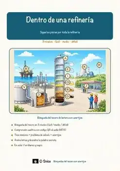
«Dentro de una refinería» – Búsqueda del tesoro de lectura
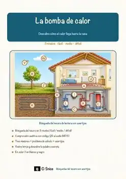
«La bomba de calor» – Búsqueda del tesoro de lectura
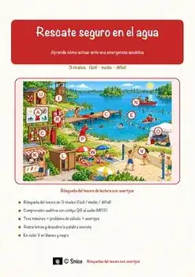
«Rescate seguro en el agua» – Búsqueda del tesoro de lectura

Salud y cuerpo humano – Spanish Reading BUNDLE | Health Fichas

Elemento – Ficha de lectura: texto con huecos, comprensión auditiva y sopa de letras

Zinc – Ficha de lectura: texto con huecos, comprensión auditiva y sopa de letras

Wolframio – Ficha de lectura: texto con huecos, comprensión auditiva y sopa de letras

Titán – Ficha de lectura: texto con huecos, comprensión auditiva y sopa de letras

Veterinario – Ficha de lectura: texto con huecos, comprensión auditiva y sopa de letras

Meitnerio – Ficha de lectura: texto con huecos, comprensión auditiva y sopa de letras

Lutecio – Ficha de lectura: texto con huecos, comprensión auditiva y sopa de letras

Sistema solar – Ficha de lectura: texto con huecos, comprensión auditiva y sopa de letras

Flerovio – Ficha de lectura: texto con huecos, comprensión auditiva y sopa de letras

Energía – Ficha de lectura: texto con huecos, comprensión auditiva y sopa de letras

Erupción volcánica – Ficha de lectura: texto con huecos, comprensión auditiva y sopa de letras

Cobre – Ficha de lectura: texto con huecos, comprensión auditiva y sopa de letras
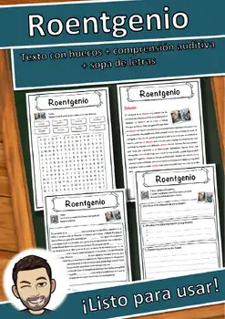
Roentgenio – Ficha de lectura: texto con huecos, comprensión auditiva y sopa de letras
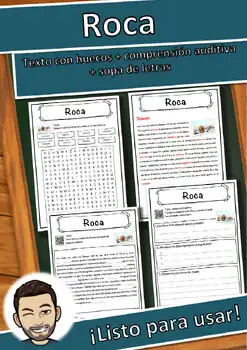
Roca – Ficha de lectura: texto con huecos, comprensión auditiva y sopa de letras
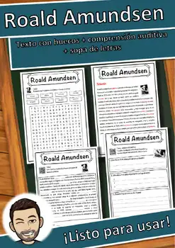
Roald Amundsen – Ficha de lectura: texto con huecos, comprensión auditiva y sopa de letras

Clima – Ficha de lectura: texto con huecos, comprensión auditiva y sopa de letras
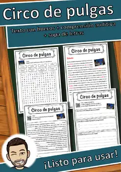
Circo de pulgas – Ficha de lectura: texto con huecos, comprensión auditiva y sopa de letras
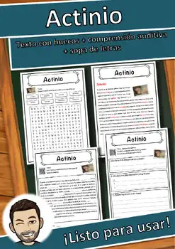
Actinio – Ficha de lectura: texto con huecos, comprensión auditiva y sopa de letras
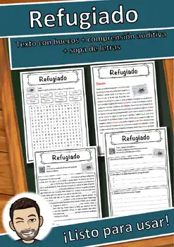
Refugiado – Ficha de lectura: texto con huecos, comprensión auditiva y sopa de letras
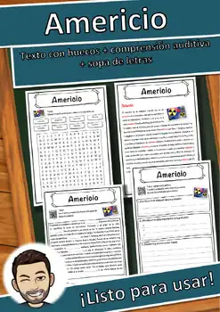
Americio – Ficha de lectura: texto con huecos, comprensión auditiva y sopa de letras
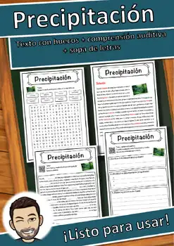
Precipitación – Ficha de lectura: texto con huecos, comprensión auditiva y sopa de letras
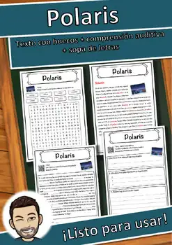
Polaris – Ficha de lectura: texto con huecos, comprensión auditiva y sopa de letras
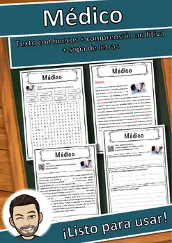
Médico – Ficha de lectura: texto con huecos, comprensión auditiva y sopa de letras
Marie Curie – Ficha de lectura: texto con huecos, comprensión auditiva y sopa de letras
Maria Sibylla Merian – Ficha de lectura: texto con huecos, comprensión auditiva y sopa de letras
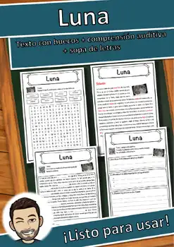
Luna – Ficha de lectura: texto con huecos, comprensión auditiva y sopa de letras
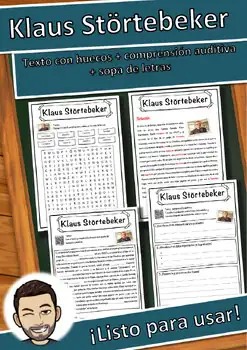
Klaus Störtebeker – Ficha de lectura: texto con huecos, comprensión auditiva y sopa de letras
Johann Wolfgang von Goethe – Ficha de lectura: texto con huecos, comprensión auditiva y sopa de letras
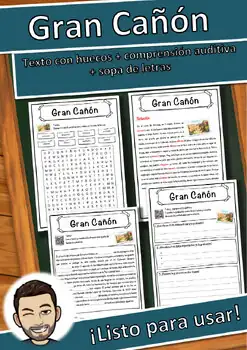
Gran Cañón – Ficha de lectura: texto con huecos, comprensión auditiva y sopa de letras
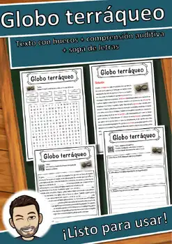
Globo terráqueo – Ficha de lectura: texto con huecos, comprensión auditiva y sopa de letras
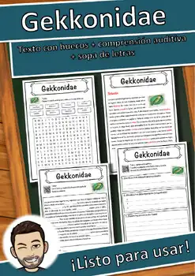
Gekkonidae – Ficha de lectura: texto con huecos, comprensión auditiva y sopa de letras
Energía renovable – Ficha de lectura: texto con huecos, comprensión auditiva y sopa de letras
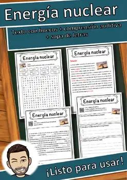
Energía nuclear – Ficha de lectura: texto con huecos, comprensión auditiva y sopa de letras
Energía hidráulica – Ficha de lectura: texto con huecos, comprensión auditiva y sopa de letras
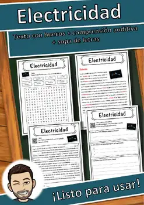
Electricidad – Ficha de lectura: texto con huecos, comprensión auditiva y sopa de letras
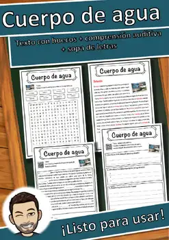
Cuerpo de agua – Ficha de lectura: texto con huecos, comprensión auditiva y sopa de letras
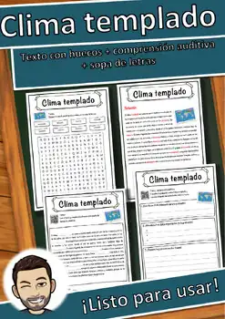
Clima templado – Ficha de lectura: texto con huecos, comprensión auditiva y sopa de letras
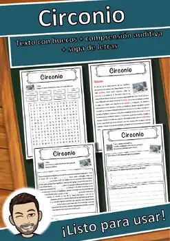
Circonio – Ficha de lectura: texto con huecos, comprensión auditiva y sopa de letras
Charles Darwin – Ficha de lectura: texto con huecos, comprensión auditiva y sopa de letras
Carlos Linneo – Ficha de lectura: texto con huecos, comprensión auditiva y sopa de letras
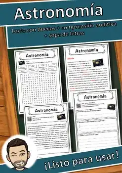
Astronomía – Ficha de lectura: texto con huecos, comprensión auditiva y sopa de letras
Astronauta – Ficha de lectura: texto con huecos, comprensión auditiva y sopa de letras
Asma – Ficha de lectura: texto con huecos, comprensión auditiva y sopa de letras
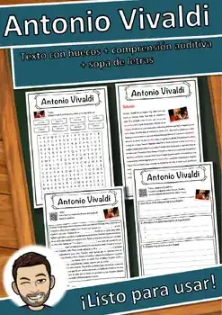
Antonio Vivaldi – Ficha de lectura: texto con huecos, comprensión auditiva y sopa de letras
No se encontraron recursos. Prueba con otra palabra o con otro filtro.